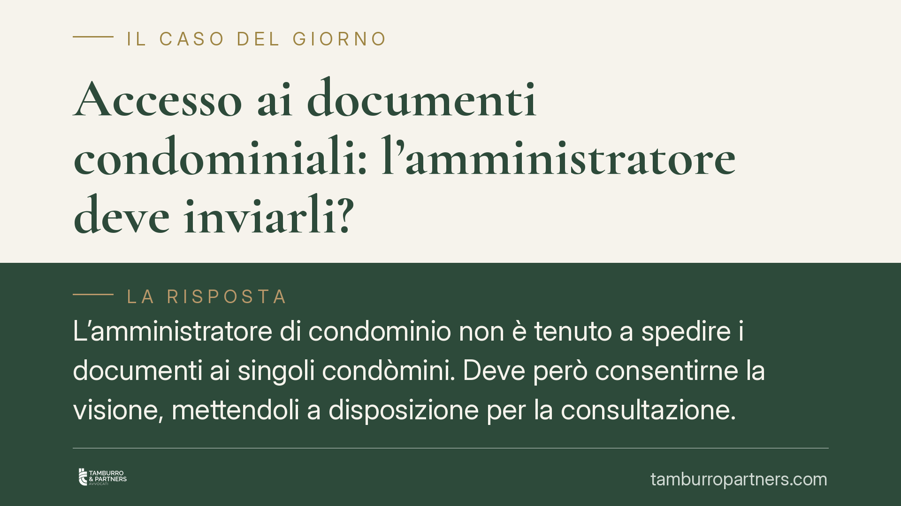

Accesso ai documenti condominiali: l'amministratore deve inviarli?
L'amministratore di condominio non è tenuto a spedire i documenti ai singoli condòmini. Deve però consentirne la visione, mettendoli a disposizione per la consultazione. Lo ribadisce una pronuncia del Tribunale di Roma del 2025, che precisa i confini del diritto di accesso previsto dal codice civile. Una distinzione con effetti pratici concreti su richieste, tempi e responsabilità.

Il caso
Un condòmino chiede all'amministratore la trasmissione della documentazione contabile e gestionale. L'amministratore non provvede all'invio, ma dichiara la propria disponibilità a consentire la consultazione. Il condòmino contesta il comportamento. Il Tribunale di Roma, con pronuncia del luglio 2025, respinge la ricostruzione del condòmino: l'obbligo di legge è quello di garantire l'accesso, non di spedire copie.
Inquadramento normativo
Il diritto del condòmino di controllare la gestione trova fondamento negli artt. 1129, 1130 e 1130-bis del codice civile.
L'art. 1130-bis, in particolare, riconosce a ciascun condòmino il diritto di prendere visione dei documenti giustificativi di spesa e di estrarne copia a proprie spese. La norma parla di *presa visione* e di *estrazione di copia*: due attività che presuppongono un accesso materiale ai documenti, non un obbligo di consegna a domicilio.
L'art. 1129 impone all'amministratore obblighi di trasparenza e rendicontazione, mentre l'art. 1130 elenca le sue attribuzioni, tra cui la tenuta ordinata della documentazione. Nessuna di queste disposizioni prevede un dovere di spedizione. La giurisprudenza — e la pronuncia romana si inserisce in un orientamento consolidato — legge coerentemente il quadro: il diritto di accesso si esercita mediante consultazione presso lo studio dell'amministratore o in altro luogo concordato.
In altre parole, l'onere di attivarsi grava sul condòmino richiedente, non sull'amministratore, il quale deve solo rendere possibile la consultazione in modo effettivo e non ostruzionistico.
Implicazioni pratiche
La distinzione tra *garantire l'accesso* e *inviare i documenti* non è formale. Ha ricadute concrete su chi deve fare cosa.
Per il condòmino: la richiesta generica di ricevere copia della documentazione, spedita a casa o via email, non obbliga l'amministratore ad adempiere in quella forma. Per esercitare correttamente il diritto occorre chiedere di prendere visione dei documenti, concordando modalità e tempi. Le spese di riproduzione delle copie restano a carico di chi le richiede.
Per l'amministratore: la disponibilità a consentire la consultazione deve essere reale. Rifiutare l'accesso, fissare condizioni pretestuose o dilatare i tempi in modo ingiustificato integra una violazione degli obblighi di trasparenza, con possibili profili di responsabilità e, nei casi gravi, giusta causa di revoca. La libertà sulle *modalità* non è libertà sull'*an*: l'accesso va comunque garantito.
Un punto spesso trascurato riguarda i tempi e i luoghi. La consultazione deve avvenire senza intralciare la gestione ordinaria, ma con modalità che non rendano il diritto puramente teorico. Orari irragionevoli o disponibilità solo a distanza di mesi possono essere contestati come condotta ostruttiva.
Resta ferma la possibilità che l'amministratore, per prassi o per delibera assembleare, scelga di trasmettere i documenti in forma digitale. Ma si tratta di una facoltà organizzativa, non di un obbligo imposto dalla legge.
Cosa fare in concreto
- Condòmini: formulate la richiesta di accesso per iscritto, indicando i documenti che intendete consultare e chiedendo di concordare data e luogo della visione.
- Condòmini: se desiderate copie, precisate che siete disponibili a sostenerne il costo di riproduzione, per evitare pretesti dilatori.
- Amministratori: rispondete tempestivamente alle richieste di accesso, proponendo date concrete e ravvicinate; documentate le comunicazioni.
- Amministratori: valutate l'adozione di un regolamento interno o di una delibera che disciplini modalità, orari e tempi di consultazione, riducendo il contenzioso.
- Entrambi: conservate traccia scritta di richieste e risposte, utile in caso di contestazione sulla condotta ostruttiva o sul mancato accesso.
Disclaimer
Contributo informativo a cura di Tamburro & Partners - Avv. Giuseppe Tamburro. Non costituisce parere legale.
Ogni condominio ha una storia a sé.
Se gestisci un'amministrazione e vuoi un confronto su una specifica questione condominiale, scrivi allo studio. Ti rispondiamo entro un giorno lavorativo.